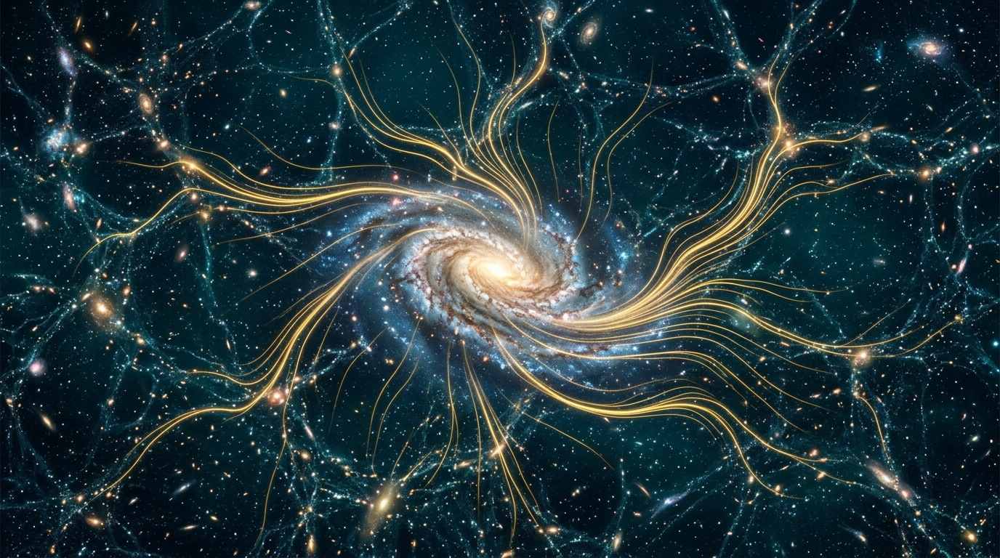
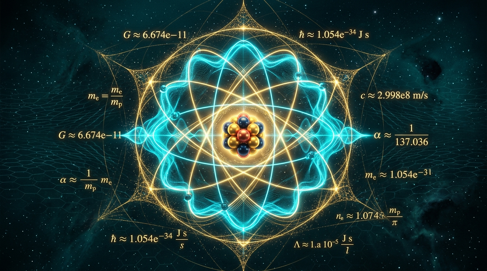
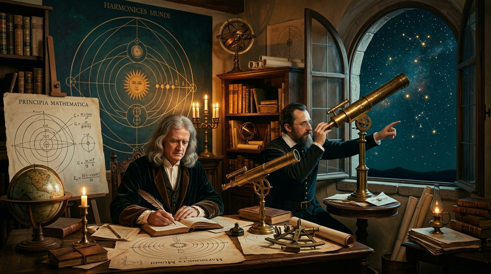

Le Grand Génie
de la Création
« Ma passion dans la vie, c'est d'explorer la science pour découvrir les qualités extraordinaires cachées d'un génie créateur. »
Plongez dans les merveilles de la cosmologie, de la physique fondamentale, de l'ADN et des grands esprits scientifiques qui ont forgé notre compréhension du cosmos.

À la une sur la chaîne
Regardez notre dernière enquête vidéo ou découvrez sa version écrite approfondie ci-dessous.
PRIX NOBEL DE MEDECINE 2026 : le code caché qui pointe vers un génie créateur!
Plongée vertigineuse au cœur de la cellule : quand les nanomachines biologiques, la densité d'information numérique de l'ADN et les mécanismes d'auto-réparation défient les explications matérialistes et pointent vers un Génie programmateur.
Les 4 Piliers du Savoir
Chaque domaine scientifique offre une fenêtre unique sur la rationalité, l'élégance et le dessein intelligent à l'œuvre dans notre univers.

2 vidéosCosmologie
L'origine de l'univers, l'expansion de l'espace-temps et l'extraordinaire ajustement fin des constantes cosmologiques.
ADN et le vivant
Le code génétique numérique, les nanomachines de réplication et la complexité irréductible qui animent la cellule.

1 vidéoPhysique
La constante de structure fine 1/137, les quatre forces fondamentales et la partition mathématique du monde matériel.

1 vidéoGrands scientifiques
Newton, Kepler, Maxwell, Faraday : comment la conviction d'un Créateur ordonné a propulsé la science moderne.